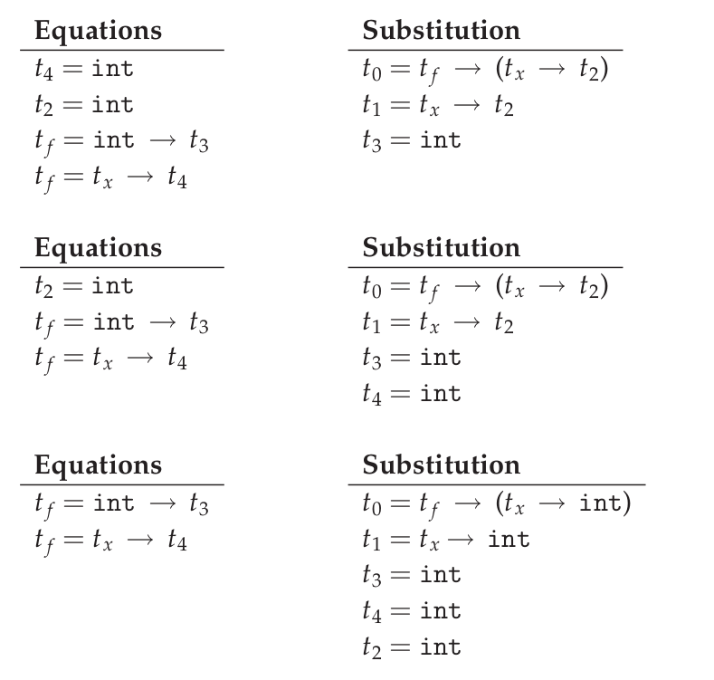
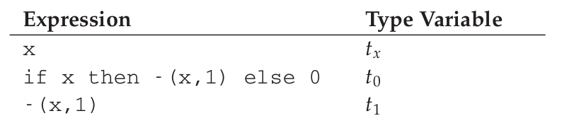
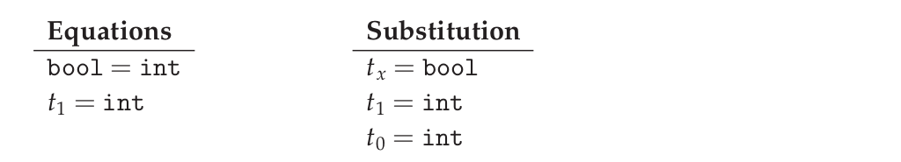

直译器的实现技术总结
主要是总结 EOPL 上的一些用于实现语言特性的技术,包括词法作用域,动态作用域,并发等等.
这篇笔记尽量不涉及实现的代码,除非代码比文字更容易描述,主要是思路方面以及几个关键疑问的 why,我也会把实践的代码放到 GitHub 上(,其实就是把书本配套的代码重构一遍而已,因为个人觉得原版代码有点乱).
先认为我们已经理解变量和环境的概念.
函数的定义和调用
先认为已经了解什么是函数编程
EOPL 里面的 PROC 语言,是一门函数式编程语言,所以它变量和函数的地位是一样的,
体现在 expressed values 和 denoted values 是一样的,并且 expressed values 就包含了函数.
在函数式编程语言中,函数既是一个值,也可以进行调用.因此除了把函数定义为语言的数据类型外,还要考虑如何实现它的调用.
PROC 它的函数都是匿名的,变量的绑定也是发生在函数传参中,定义函数的语法如下
proc (<arg>) <body>
函数作为一个数据,它需要记录3个信息,函数的形参(parameters),函数体(body)以及环境(environment).前两个信息可以一眼观察出来(参考 Lisp 的 lambda 表达式的使用),唯独环境是直译器内部维护的.
因为函数调用的时候会发生变量绑定,也就是形参(parameters)和实参(arguments)进行绑定,其中形参是变量,实参是值,所以函数需要一个环境来应对的绑定发生.
那么现在问题来了: 那么这个环境的初始值该怎么取呢?. PROC 里面函数的环境是在计算 AST 的时候得出来的,假设函数表达式在 AST 里面是 proc-exp 结构,
那么准确一点的说法就是 在直译器在计算 proc-exp 结构的时候使用当前的环境的值做为初始值,虽然说了不考虑作用域规则,但是还是要说明一下 PROC 语言使用的规则就是词法作用域.
在词法作用域下,修改 PROC 的函数的环境是不会对全局的作用域有副作用的,可以理解成函数定义时深拷贝了一份全局环境,函数记录的环境在定义的时候就决定好了.
最后是函数调用的本质: 函数体(body)在函数记录的环境下(environment)进行运算.
最后对于词法作用域我有个疑问,就是下面的例子
(define (example-maker) (define func (lambda (x) (+ x a))) (define a 1) func) (define example (example-maker)) (example 3) ; => 4
疑问点是 a 在 func 之后定义,然而 func 却可以使用之后 a 的绑定,个人猜测这里使用了如 JavaScript 变量提升(Hoisting,也叫标识符提升)的那种技术.
这种技术就是让你提前获取未定义变量,有一个表示未初始化的默认值,所以 func 定义的时候可以获取了 a 的值,不过 a 的值是未定义之类的,
不过和这个变量 a 不是普通的绑定,是一个引用(reference),因为后面 a 的定义会对 func 里面的 a 有影响.
也只是猜测,展示没有办法证明 Racket 这种语言也是使用了这种技术.
递归函数
EOPL 里面的 LETREC 语言在 PROC 的基础上支持递归,增加了递归声明语句.
letrec proc-name (bound-var) = proc-body in letrec-body
解析成 AST,
letrec-exp (proc-name bound-var proc-body letrec-body)
其中 proc-name 是递归函数的名字, bound-var 是递归函数的形参, proc-body 是递归函数的函数体.
递归函数和普通函数一样,也是记录了形参,函数体和环境三个信息,同样递归函数的调用本质和不同函数也是没有区别.
递归之所以需要函数的名字,那是因为递归函数调用的时候,函数体里面要引用它自己,如何获取函数定义呢?那必然是与变量一样在环境里面根据名字查找对应的值.
现实就有一个例子, Lisp 的 lambda 表达式是没有办法自己递归的,只有绑定了一个名字才可以递归.
这样又有一个问题了,在把递归函数的绑定储存到环境 env 之前,递归函数和本身也是需要记录一个环境 env0 的,那么这个环境 env0 是怎么样的呢?
实际上 env 和 env0 是一样的. 因为函数在定义的时候就决定好了环境,而函数定义又只有一次而已,而且递归函数的环境不需要记住上一次的参数绑定,它只需要在定义时候当前环境的基础上储存函数名字和函数本身的绑定就好了.
所以书上的递归函数的环境是这么定义的(这只是其中一种实现方法而已),
;; extend-env-rec : ProcName x BoundVar x ProcBody x LetrecBody -> Env (define extend-env-rec (lambda (proc-name bound-var proc-body old-env) (let ((vec (make-vector 1))) (let ((new-env (extend-env proc-name vec old-env))) (vector-set! vec 0 (proc-val (procedure bound-var proc-body new-env))) new-env))))
词法地址 (lexical/static address)
假设你已经知道词法作用域
上面提到的环境(environments),这里称它为 old-school-env,是一个类似于链表的结构,每个元素是 name-value,表示变量绑定,查找变量的时候需要按照链表顺序一个一个比对.如果环境的储存的东西多了效率就低了.
如果可以像 Hash Table 那样可以通过地址查找变量的值,效率就可以提高很多了.事实上的确是可以这么做,虽然不能达到 O(1),但是可以减少很多次比对,就是用词法地址.什么是词法地址呢?
首先词法作用域是可以嵌套的,一个嵌套就为一层,从变量声明的那一层到引用它的那一层,中间相差的层数就是它的引用地址.
为了方便计算,每层给一个编号,声明变量的那一层对于该变量的是第一层,编号可以采用 Zero-based indexing,也就是从 0 开始.
简单点说就是变量的引用深度就是词法地址,也较叫做词法深度(lexical/static depth).
比如这段 Scheme 代码,
(lambda (x) ((lambda (a) (x a)) x))
采用 #N 这样的标记表示第 N 层,如果用词法地址标示里面的 x 和 a 的话就是这样,
(lambda (x) ((lambda (a) (#1 #0)) ; 对于 x 是第二层,对于 a 是第一层. #0)) ; 对于 x 是第一层.
词法地址有一个要求,那就是必须唯一.但是现实中基本所有语言的函数都支持多个参数,如果是多个参数,上面的方法就不适用了.
比如下面 x 和 y 的词法地址就会发生冲突.=EOPL= 上没有说,不过我在这里找到答案.
做法就是拓展一下词法地址,记录多一个信息就可以了,比如下面 lambda 的 (x y) 也是一个列表,
那么额外记录它们的索引就可以保证词法地址唯一了,就像这样 #(depth index), 其中 index 和 depth 一样从零开始.
(lambda (x y) ((lambda (a) (x (a y))) x))
使用词法地址表示里面引用,就像这样,
(lambda (x y) ((lambda (a) (#(1 0) #(0 0) (#(1 1)))) #(0 0)))
到这里不难发现 变量名字就是个语法糖(syntactic sugar),的确,在 interpreter 是不需要使用变量名字来进行计算,而我们也是这么做.
为了简单一点,现在只考虑只有一个参数的情况.
一旦使用了词法地址就不能在采用 old-style-env 那种设计了,不再以 name-value 形式储存绑定.
现在需要把 names 和 values 分开储存,需要两个环境,分别称为 static environment 和 nameless environment,在这里是两个列表.
前者储存所有变量名字,后者储存变量的值,变量在 static environment 中的索引和它所对应的值在 nameless environment 中的索引是一样的.
每次遇到变量的定义/声明就把变量存放到 static environment 第一个位置,这样遇到刚定义的变量永远处于第一层,并且正好索引都为 0.
查找变量的值过程就是 先在 static environment 中查找出变量的索引,然后根据该索引在 nameless environment 中取值.
EOPL 上的 LEXADDR 语言就是根据这些思路实现的,实现的流程如下,
Translator: 把解析得到的AST翻译成任何变量的AST,也就是用词法地址替换掉引用,过程大致如下,- 遇到变量定义/声明就把变量储存在
static environment中并且移除变量; - 在遇到变量引用的时候,通过
static environment计算出该变量的词法地址,用获得的词法地址替换变量引用.
- 遇到变量定义/声明就把变量储存在
Interpreter: 计算出翻译后的AST的值,不过和上面以往的实现不一样,不是操作old-style-env而是使用nameless environment,在遇到翻译得到的词法地址,根据该词法地址在nameless environment中找出对应的值.
引用和计算作用 (References and computation effects)
到目前为止都是认为值是通过计算产生的,但是计算也可以产生作用(你应该听说过什么是副作用).
产生值和产生作用的区别在于作用是全局的,可以影响整个计算过程.作用有很多类,最常见一类是变量赋值,接下来也是专门讲它.
变量赋值(variable assignment)和变量绑定(variable binding)不是一回事,是有区别的,绑定是局部的(local),而变量赋值 可能 是全局的(global).
变量赋值可以给内存的某个位置赋值,而这个内存位置可以被多个地方共享,而变量绑定是不能被多个地方共享的.我们会建立一个内存模型,用来实现内存位置的引用.
内存就是有一个有限的映射(finite map),从变量在内存中的位置(location)到该变量的值,这些值叫做可储存值(storable values),由于历史原因,我们把这个模型叫做 store.
Store : Location -> Value
表示位置的数据结构叫做引用(reference,上面的词法地址也是引用),位置是指内存中用来储存值的地方,而引用就是指向这个地方.
打个比方,在某个路径的文件一样,路径就是引用,文件就是位置,这个文件的内容就是可储存的值.在典型的编程语言设计中,可储存值属于 expressed value.
引用有时候叫做 L-values,那是因为它出现在赋值表达式的左手边, expressed values 则是在右手边,叫做 R-values.
语言的引用有两种设计形式,显式引用(explicit references)和隐式引用(implicit references).显式引用也就是可以手动操作引用,隐式引用全靠语言维护引用.
显示引用
(书本的 EXPLICIT-REFS 语言.)
现实中采用这种设计的语言最出名的就是 C/C++,它们的指针.操作引用有三个动作,
NEWREF: 分配位置(location),也就是C/C++里面的分配(allocate)内存,返回指向它的引用.DEREF: 获取引用所指向的位置上的内容.SETREF: 改变引用所指向的位置上的内容.
这种设计中,语言的值是这样定义的,
ExpVal = Int + Bool + Proc + Ref(ExpVal) DenVal = ExpVal
多了一个 Ref(ExpVal),这样就可以手动操作引用了.
由于现在要考虑计算的作用(这里主要是变量赋值),所以计算的时候除了记录环境变量绑定外,还需要记录 store.
有两种方法记录 store,
Store Passing Specification
这种形式是把
store储存在参数中,value-of的定义就要变成这样(value-of exp env store),整个计算过程中,不同时刻的
store的内容都 可能 会被修改,把某个时刻的store的值称为state.计算过程中有作用: (value-of exp env1 store0) = (val, store1) 计算过程中没有作用: (value-of exp env2 store0) = (val, store0)
σ表示整个store,也就是内存,[l=v]σ表示σ的l引用指向了v,表明σ发生了改变.- 保存在全局变量中
最后还要选一个 representation 来表示 store,这里选择 列表:
- 列表的索引作为引用(reference),索引对应的值就是引用所指向的位置的内容
- 最新
NEWREF的引用放置在列表的最后一个位置.
书本上的例子采用的第二种方案.
隐式引用
大部份语言都是采用这种设计, Lisp, JavaScript, Python 等等,不需要程序员手动管理引用.
这种设计也叫做 call-by-name.除了这一点外,和采用显式引用设计的语言最大区别就是值的定义不一样,
ExpVal = Int + Bool + Proc DenVal = Ref(ExpVal)
不过书上的例子中 Reference 依然是定义在 ExpVal 中,只是不能再通过 Expression 计算得出 Reference,这种方式也是间接定义了 DenVal.
环境不再是从变量到值的映射,而是从变量到引用的映射,也就是以后所有绑定动作会分配引用(NEWREF).
能计算出 Reference 的地方只有 apply-env.
Env : Var -> Ref(Var)
根据变量在环境得到的引用后,再到 store 根据引用获得变量的值(DEREF,是不是和词法地址的设计有点相似).
对于 SETREF,需要一个 ASSIGN 操作,实际中, Scheme 的 set 操作符号就是这一类.
在这种设计中,我们可以说: 变量是可以变的(mutable),并且和上面定义的一样, DenVal 和 ExpVal 不一样,变量是不可以被 DEREF 的.
Mutable Pairs
关于 Mutable Pair (下文简称 MutPair),可以参考 Scheme 里面的 pair.
MutPair := (CAR CDR) CAR := RefToVal CDR := RefToNextLocation
关于 MutPair 的 representation,有两种方式:
- 一个包含两个字段的数据结构,分别是
CAR和CDR字段, 它们两个不一定处于内存连续的位置,也就是分别独立. - 既然
CAR和CDR都是引用,那么让它们处于内存连续的位置上,用CAR的引用表示MutPair.
在 -source language 中 MutPair 有以下几个接口:
make-pairleftrightsetleftsetright
参数传递方式 (Parameter passing)
调用函数的时候,形式参数(formal parameter)会绑定实际参数的 denoted value.
参数传递有不同的方式,这里总结一下之前见过的方式和之后采用一些新的方式.
Natural parameter passing在这种设计中,
denoted value和实际参数的expressed value是一样的.Call-by-value在这种设计中,
denoted value是一个位置的引用( a reference to a location),该位置包含实际参数的expressed value.和
natural parameter passing不同在于call-by-value里面实际参数的值是reference.大部份编程语言都是采用这种设计,比如Racket,Emacs Lisp,Python,JavaScript等等.Call-by-reference在这种设计中,值的定义和
call-by-value中的一样,ExpVal = Int + Bool + Proc DenVal = Ref(ExpVal)
在函数内改变参数的值可以改变实际参数的值.
let p = proc (x) set x = 4 in let a = 3 in begin (p a); a end
在
call-by-value的设计下,当(p a)的a等于4的时候,最后a的值为3;当程序改成这样,let p = proc (x) setleft(x,4) in let a = pair(3,4) in begin (p a); a end
a的结果为(4,4),后面成功更改了实际参数的值.原因是更改前的
set x =4给x分配了新引用,而更改后的setleft(x,4)没有给x分配新的引用,是直接在x的引用的基础上做修改的.这就是实现
call-by-reference的关键点所在,call-by-value每次运算参数(也叫operand)的时候都会新分配一个引用,而
call-by-reference只要是传入变量作为参数的时候不要新分配引用就可以了.Lazy Evaluation/Call-by-name/Call-by-need到目前为止,每次调用函数的时候都会先计算出实际参数的值,而现在这种方式在这点上不一样.
函数调用的时候不会先计算出实际参数的值,只有函数体引用到参数才会计算参数的值.比如下面这个,
letrec infinite-loop (x) = (infinite-loop -(x,-1)) in let f = proc (z) 11 in (f (infinite-loop 0))
在这种设计下,
(f (infinite-loop 0))永远都返回11.因为函数f的函数体内没有引用到参数z,所以(infinite-loop 0)不会发生计算.上面这个例子有点像
Lambda calculus的β-reduction,这是编程语言语义学的内容,不详细讲.把那些没有经过运算的参数叫做参数冻结(frozen),当运算它的时候叫做参数解冻
thawed.这样有一个问题,在词法作用域下,函数定义的时候就决定好环境,现在参数要冻结,那么变量就不能和值的位置(location)关联并且储存到环境里面了.
所以需要一个新的数据类型
thunk,变量关联thunk的位置(location)并且储存到环境中.一个thunk包含一个表达式(expression)和一个环境(environment),用于在必要时候运算.在这种设计下,值的设定如下,
DenVal = Ref(ExpVal + Thunk) ExpVal = Int + Bool + Proc
当每次遇到变量的时候,如果变量的值是
Ref(ExpVal),也就说不是在参数绑定的时候,就根据它的引用获得值.如果变量的值是
Ref(Thunk),也就说变量作为函数调用的参数,并且在函数体内被引用,那么就要利用它所指向的thunk进行计算.在这种设计方式下,函数的计算方式和
β-reduction一样,可以对计算化简,如果函数没有任何计算作用,那么这种方式是没有问题的.上面的那个例子中,
(infinite-loop 0)被直接无视掉了,由于它没有计算作用,所以无视它是没有问题的,可以如果(infinite-loop 0)计算的时候需要打印一些信息,那么这就有问题了.因为计算作用是我们需要的,不能忽略.还有一个问题,那就是计算的顺序会变得不确定,所以这种设计基本上不会在实际的编程语言中见到.
控制上下文 (Control Context)
针对特性不同的语言有不同的方法实现控制上下文.之前已经写过一篇关于 [[../06/continuation-passing-style.org][CPS]] 的文章,里面已经解释了 CPS, continuation 和 control context 的概念,就不再赘述了.
Continuation-Passing Interpreter
Continuation-passing interpreter 的目的是实现控制上下文(control context)这一特性,做法就是给 interpreter 的函数,比如 value-of,添加第三个参数,也就是 continuation.
这个直译器是基于 LETREC 重写(overwrite)的,目标是让 value-of 的调用不会导致控制上下文的增长.
FinalAnswer = ExpVal Cont : ExpVal -> FinalAnswer
不同情况下 continuation 是不一样的,书上的例子大概就是根据表达式种类来划分.在递归中的说法中,当前执行的表达式是常量,函数以及变量就是基本情况.
Trampolined Interpreter
用 procedure language 把一个直译器改写为 continuation-passing interpreter 可能不是一个明智的做法.
因为大部份 procedure language 不是在必要的时候增长控制上下文,而是每一次函数调用都增长控制上下文(stack!),比如 Python,这些系统上的函数调用只有在计算结束的时候才返回,所以到结束为止栈会一直增长.
实际上这些语言这么设计也是合理的,如果函数调用出现在赋值表达式的右手边,那么就需要通过增长控制上下文跟踪下一步的赋值.并且大部份语言都把 environment 信息储存到栈上,每次函数调用的时候都会产生一个控制上下文来在之后移除栈上的 environment 信息.
用这种语言实现 interpreter 的时候,可以使用一种叫做 trampolining 的技术来避免无止境的函数调用链(an unbound chain of procedure calls).
做法就是让 interpreter 里面的其中一个函数返回一个无参数的函数(zero-argument procedure),然后执行这个返回值.比如 interpreter 里面有一个 apply-procedure/k 如下,
(define apply-procedure/k (lambda (proc arg cont) (body-of-apply-procedure/k)))
trampolining 后就是这样,
(define apply-procedure/k (lambda (proc arg cont) (lambda () (body-of-apply-procedure/k))))
不过我们要把这个抽象出来,整个 interpreter 的都会被一个叫做 trampoline 的函数分开. Interpreter 计算得到的值会先是一个 Bounce,然后把 bounce 传给 trampoline 函数计算出结果.
书本上的例子是基于上一个小节的 continuation-passing interpreter 修改的,定义修改部分为,
value-of-program : Program -> FinalAnswer apply-procedure/k : Proc * ExpVal * Cont -> Bounce value-of/k : Exp * Env * Cont -> Bounce apply-cont : Cont * ExpVal -> Bounce
FinalAnswer, Trampoline 和 Bounce 的定义如下,
FinalAnswer = ExpVal Trampoline : Bounce -> FinalAnswer Bounce = ExpVal ∪ (() -> Bounce)
其中 trampoline 的实现如下,
(define trampoline (lambda (bounce) (if (expval? bounce) bounce (trampoline (bounce)))))
没有明确定义需要 trampolining 哪些函数,只要符合上面的定义就好.
Imperative Interpreter
并非所有语言都是支持函数式编程,想用这种语言实现控制上下文,那么可以采用寄存器(register)设计方式进行实现.
可以根据上面的 continuation-passing interpreter 进行改写, continuation-passing interpreter 的当前执行点的 environment, continuation, exp, proc 和 val 所有信息都是通过传参维护的,
imperative interpreter 则是通过把这些信息储存到对应的全局变量里,这些全局变量就是模拟寄存器.采用寄存器设计之后 value-of/k, apply-cont 这样用于计算的函数就不需要参数了.
异常 (Exceptions)
基于上面的 Continuation-Passing Interpreter 进行修改.异常处理需要基于控制上下文实现的.
实现分为两部分: 设置异常处理器(installing exception handler)和引发异常(raise exception).
把控制上下文看做栈(stack):
- 设置异常处理器的时候实际就是把异常处理器(exception handler)封装成帧(frame)压进栈里面,
- 引发异常就是在栈里面查找相应的异常处理器,如果没有找到就引发错误,也就是捕捉不到异常,反之异常捕捉成功.
具体实现中关键点在于添加两种新的 continuations.
线程 (Threads)
一次处理多个计算(multiple computations),它们跑在同一个地址空间(address space)里面,这个地址空间是同一个进程(process)的一部分,这些计算叫做线程(threads).
因为要使用地址空间,这次需要基于 IMPLICIT-REFS 语言来实现,这么语言有 store (不过我们先要把它改成 continuation-passing interpreter).
现在目标是实现一个单核直译器,先总结一下线程模型的一些特点:
- 一个进程只维护一个线程池 (a pool of threads),
- 线程的状态为
running(正在运行),runnable(随时都可以运行),或者blocked(由于某些原因没有准备好运行) 之一. - 一个
CPU同一时间点上只有一个进程,这个进程同以时间点上只能运行一个线程, - 主线程的返回值作为多线程的返回值,而不是子线程的返回值.
线程的执行由调度器(scheduler)调度.线程执行了一定时间后就切换执行另外一个线程,而我们的做法是根据计算步数来进行判断是否切换到另外一个线程,而一个
continuation就是一步.调度器有以下几个状态:
the-ready-queue: 维护runnable线程的队列.the-max-time-slice: 每个线程可以执行的步数.the-time-remaining: 当前运行的线程还剩多少步.the-final-answer: 主线程的结果.
调度器的完整工作流程就是:
- 如果
the-ready-queue为空,执行下一个线程的时候返回the-final-answer,所有计算完成. - 如果
the-ready-queue不为空,那么选择the-ready-queue的第一个线程作为下一个执行线程 (running treads),并且开始计算它的剩余步数the-time-remaining,the-time-remaining的初始值为the-max-time-slice. - 当
the-time-remaining为0的时候,如果线程整个运算还没有完成,那么就添加进the-ready-queue并且等待下一轮的执行.这里有一个边界问题,如果刚好执行完the-max-time-slice步并且下一步就要返回,那么改线程还是得添加the-ready-queue中,下一轮执行就是返回结果,返回结果后就不再添加进the-ready-queue中. - 从第一步开始重复整个过程.
因此调度器有以下接口:
initialize-scheduler! : Int -> Unspecified初始化调度器的状态.
place-on-ready-queue! : Thread -> Unspecified添加线程到
the-ready-queue中.run-next-thread : () -> FinalAnswer执行下一个线程,如果
the-ready-queue为空,返回the final answer.set-final-answer! : ExpVal -> Unspecified设置主线程的结果.
time-expired? : () -> Bool判断是否
the-time-remaining是否为0.decrement-timer! : () -> Unspecifiedthe-time-remaining减少1.
在实现的时候还需要考虑如何定义针对主线程和子线程的 continuations.
另外还有线程的同步功能,最简单的同步功能就是 mutex (mutual exclusion 的简写) 或者 binary semaphore.
其中 mutex 有打开(open)和关闭(closed)两种状态,同一时刻只有一个状态;它还包含一个队列,这个队列里面都是在等 mutex 被打开的线程.
(struct mutex (closed? wait-queue))
对于 mutex 三种操作,新建, wait 和 signal.新建的 mutex 默认是 open 的.
wait让线程
th等待mutex,这个行为取决于mutex的状态.如果
mutex本身就是closed,那么th就被添加到wait-queue中并且被挂起,然后运行the-ready-queue里面的下一个线程,我们就说这个blocked线程在等待这个mutex打开.如果
mutex本身是open,那么mutext就会关闭,然后运行th线程.signal使用线程
th释放mutex,这个行为取决于mutex的状态.如果
mutex本身是closed,并且wait-queue没有任何线程,那么mutex就变成open并且运行th.如果
mutex本身是closed,并且wait-queue有线程,那么就从里面取一个线程放置到调度器的the-ready-queue里面,保持mutex为closed.并且执行th.如果
mutex本身是open,那么th就让它保持open然后继续执行.
类型系统 (Types)
在没有运行程序的情况下分析(analyze)/预测(predict)程序的行为,目的是判断程序的运行是否安全.安全意味这运行的时候是否产生错误.
当然错误的原因有很多,比如除以0,索引超出数据范围等等,这些错误不在我们的考虑范围内,因为实现起来会十分困难.
我们考虑的安全就只有类型的正确性,比如 Lisp 的 (- 1 a), a 绑定的数据为 number 类型才安全.
还有一种情况,安全运算可能是无限运行的,这个也不在我们的考虑范围中.
我们的目标是写一个 分析程序(analysis procedure) 来查看程序的代码然后接受(accept)或者拒绝(reject)它运行.书上没有说,不过这种类型系统系统叫做静态类型检测 Static Type Checking.
如果分析结果接受(accept)了被检测的程序,那么可以肯定被检测的程序的运算是安全的,也就是说运算安全就会被接受.
如果分析结果不能确定程序是否安全,那么一定要拒绝(reject)程序,这种情况就说分析结果是 sound ,也就是没有错误(free from errors).
值 v 和类型 t 的关系是这样的: v是否有类型t (v has type t) 或者 v是否属于类型t (v is of type t).
我们可以根据这个关系来设计一套系统来跟踪值的类型: 把类型抽象为语言的一种结构,叫做类型结构(type structure),比如下面是 LETREC 语言的类型结构定义,
Type ::= int
| bool
| (Type -> Type)
现在有一个函数如下,
proc (x) if zero?(-(a,1)) then 0 else a+1
那么类型系统的工作流程大概就是这样的,
-(a,1) 有 int 类型;
zero(-(a,1)) 有 bool 类型;
所以 proc (x) if zero?(-(a,1)) then 0 else a+1 有 (int -> int) 类型.
目前位置只处理表达式值,大致的实现方案就是写一个函数(procedure),接受一个表达式(expression)和一个类型环境(type environment),计算出该表达式的类型.
类型环境的定义如下,
Type-Environment : Variable -> Type
这个函数和 value-of 这个 observer 很类似,不同在于这个函数计算的是类型,所以我们就叫这个函数 type-of,定义如下,
type-of : Expression * Type-Environment -> (type | nontermination | an-error-other-than-a-type-error)
和 value-of 类似,不同的表达式有不同的行为,拿 LETREC 来说,

Figure 1: Simple typing rules

Figure 2: Proc typing rule
函数表达式有点特殊,这条规则是 sound,因为函数的变量是在运行的时候进行绑定的,所以在没有运行的时候得不到变量的类型,所以也就没有办法得到函数的类型.
类型系统有两种标准设计: Type Checking 和 Type Inference.
Type Checking在使用采用这种设计的编程语言的时候,程序员需要在声明变量的时候提供类型,然后类型检测器(type-checker)会推断(deduces)出其它表达式的类型并且检查是否一致.
比如
C/C++, Java, C#, GO这些语言.Type Inference在使用采用这种设计的编程语言的时候,程序员不需要为变量提供类型,类型检测器(type-checker)会根据变量的使用方式尝试推导(infer)出变量的类型.
比如
Scheme, Racket, JavaScript, Python这些语言.如果语言设计得好,是可以推导出大部份表达式的类型的.
类型检测 (Type Checking)
基于 LETREC 修改获得 CHECKED 语言,为它实现一个类型检测系统.
类型推导 (Type Inference)
基于 CHECKED 修改得到 INFERRED 语言.把类型的定义变为可选,
Optional-type ::= ?
| Type
Expression ::= proc (Identifier : Optional-type) Expression
| letrec Optional-type Identifier (Identifier : Optional-type) = Expression in Expression
? 是需要被推理出来的类型.简单来说就是通过等式来推导.
一个推导结果一致导的例子
假如我们要推导 proc (f) proc (x) -((f 3), (f x)),那么首先要列出一张包含所有变量表达式, proc 表达式, if 表达式以及 let 表达式的表,并且给每一个都标上一个类型变量.

根据这个表整理出类型等式

接下通过这些等式推导出每个类型变量的值,这个过程叫做 unification.左边的等式(equations)是要被解决的等式,右边 substitution 是目前已经被解决的等式.

Figure 5: Unification-1
逐个等式逐个思考,每次移动一个等式到右边.

Figure 6: Unification-2
当移动的等式的变量出现在 substitution 中等式的右边,那么就进行替换.

Figure 7: Unification-3

Figure 8: Unification-4
因为在 substitution 中已经解决了一些类型变量的值了,可以用在左边的等式上.

Figure 9: Applying substitution to the equation

Figure 10: Unification-5

Figure 11: Unification-6
如果等式的两边都不是单纯的变量,那么可以拆成两个.

Figure 12: Unification-7

Figure 13: Unification-8

Figure 14: Unification-9
到目前为止整个计算都是 acceptable.
一个推导结果不确定的例子
这次的例子是 proc (f) (f 11),


没有办法确定最终的类型,这种情况就说 t1 是多态的(polymorphic).
一个推导结果不一致的例子
这次的例子是 if x then -(x,1) else 0.




正如上面一样, tx 既是 bool 也是 int 类型,已经出现了不一致,也就意味着 if x then -(x,1) else 0 是非法的(illegal).
一个无法推导的例子
这次的例子是 proc (f) zero?((f f)).


这里出现了一个无法推导的结果: 右手边永远大于左手边.如果类似的等式: 该等式左手边的变量出现该等式的右手边中,那么就可以得出该等式不存在结果的结论.
在 substitution 中也是一样, substitution 中的等式要满足这一个条件,这叫做 occurrence check.
一些实现的关键点
和 CHECKED 一样需要实现一个 type-of observer,实际上它和 IMPLICIT/EXPLICIT-REFS 这两门语言的 value-of 类似, substitution 和 store 上都是数据上下文.
按照上面的那些例子,我们把左边等式 tv=t 移动到右边的 substitution 叫做 unifier,并且这是一个两步操作: 首先替换 substitution 中所有等式右手边在等式中的变量 tv,然后把等式 tv=t 添加进 substitution 中.
当然这个过程中还要做 occurrence check.最后 type-of 的定义如下,
Answer = Type * Substitution type-of : Expression * Type-Environment * Substitution -> Answer
模块 (Module)
什么是模块? 当程序变得复杂的时候,就需要把程序分成多个相对独立的部分,并且标明各个部分之间的依赖关系,每个部分就是一个模块.
模块的职责是什么?
- 和词法作用域一样需要控制名字的作用域和名字的绑定的,当程序被分块后, 每个模块有自己的作用域和绑定集合.
- 它可以确保抽象边界(abstraction boundaries),和数据类型抽象(data type abstraction)一样,在数据类型的(接口)实现之内中可以任意操作数据,如果要在实现之外操作数据就只能通过它的接口,这就是抽象边界.如果遵守这种设计,那么就可以改变数据类型(改变
representation),因为这种情况下不依赖实现细节. - 灵活组合模块并且可以在不同上下文中使用.
利用有模块系统的语言写出来的程序就是一系列模块定义后面跟着要被运行的表达式.
模块有两种形式: simple module 和 module procedure.前者是一个绑定的集合,后者是一个函数,接受一个模块做为参数并且返回另外一个模块.
模块的定义会绑定到一个名字上面,每个模块都有一个接口,如果是 simple module 的话就叫做 simple interface,用来列出模块提供的绑定以及它们的类型.
如果是 module procedure 的话,它的接口规定了它自己的参数以及结果模块的接口,简单点就是函数的类型.
SIMPLE-MODULES
基于 CHECKED 修改.
Simple module 的样子大概就是,一个模块接口( interface )部分和一个模块体( body )部分, interface 向别的模块提供值,而 body 则是提供这些值的绑定, body 要满足 interface 的要求并且它的最终结果会做为模块的值.
从别的模块导入的变量叫做 qualified variables.每个模块都会在模块体和程序的剩余部分之间建立一个抽象边界,模块体内的表达式就是处于边界内,反之边界外.
上面也说过了,模块可以是一个绑定的结合,其实它就是一个新型的 environment,当引用模块的时候就是在这种 environment 查找 qualified variable.
不过在这之前还要考虑先如何查找模块本身,由于模块的接口本身就像类型,所以我们把模块看作 interface module-name module-body,这样就很像 C 语言里面的变量定义,可以使用 type environment 来维护模块定义和模块名字的绑定.
所以整个导入行为比如 from module take var : 先在 type environment 查找 module 然后在 module 的 environment 查找 var. Interface 是一个复杂的类型,所以还需要通过 checker 进行类型检测,判断模块体是否满足接口定义.
Modules That Declare Types
基于 SIMPLE-MODULES 进行拓展,该语言名字叫做 OPAQUE-TYPES.
目前为止模块的接口部分只能声明普通的变量以及它们类型,现在的目标是允许语言实现声明类型(也就是和声明变量一样声明类型).类型有两种: opaque/abstract types 和 transparent/concrete types 或者叫 type abbreviations.
两者的差别在于前者定义的类型 t 的真实定义只对定义它的模块体内透明,不对外透明,透明的意思是知道变量的真实定义,别的模块只能使用 t,但是不清楚它的定义;而后者则是模块内外都透明.
现在需要多一种 type environment 来维护类型声明和拓展类型的定义,
Type :: = int | bool | from m take t | (Type -> Type)
from m take t 叫做 expanded type.
Module Procedures
基于 OPAQUE-TYPES 拓展的 PROC-MODULES.
和函数 proc (arg) body 类似, module procedure 的语法如下,
module-procedure ((Module-Name-Arg : Interface-of-Module) => Interface-of-New-Module) * body

Figure 25: 模块函数的例子
之所以需要模块函数,那么是因为让模块变得更加可复用.
对象和类 (Objects and Classes)
很多编程任务要求通过一个接口管理一部分状态,面向对象编程( Object-oriented programming,后面简称 OOP )可以很好地完成这项任务.
在 OOP 中,一个对象就是一部分状态,一个对象包含若干个 fields (它们实际上是 =references) 以及几个相关的函数(procedures),也就是我们常说的方法(methods),方法可以用来访问 fields.
调用方法的这种操作可以看作给对象发送方法名字和参数作为信息,有时候这叫做消息传递 (message-passing).
OOP 中提供一种叫做 class 的结构体, class 为每一个对象指定 fields 和 methods,每一个创建的对象叫做实例 (instance).
OOP 一般还提供继承 (inheritance),可以通过在已存在的对象的基础上做一些修改来定义一个新的 class,这些修改可以是包括改变 methods 的行为或者添加新的 fields 或者 methods.
我们说,新的 class 继承于/拓展旧的 class,因为剩余的部分没有被修改.
对象实际和模块有很多相似点,不过它们非常不一样.模块和类都提供定义不透明类型(defining opaque types).然而一个对象是一个带有行为的数据结构,模块仅仅是一个绑定的集合.
同一个类可以有多个对象,大部份的模块系统不提供类似的能力.在另外一个方面来说像 PROC-MODULES 提供更灵活的方式控制名字的可见度.
Dynamic dispatch 是 OOP 中的一个关键点,这确保了定义对象方法的时候会调用正确的方法,有多个不同类的对象有同样的方法,在不清楚对象类型的时候调用这个对象的方法会正确工作, duck-like 特性就是利用了这个特性.
继承正如上面说了在旧类上做增量修改来定义新类,新类是旧类的子类(child/subclass),旧类是新类的父类(parent)或者超类(superclass),在层级关系里面,还有先祖(ancestors)和后代(descendants)这种说法.父类可以有多个子类.那么子类呢?
这里涉及继承的两种设计: 单继承(single inheritance)和多继承(multiple inheritance),前者中子类只能有最多一个父类,后者中子类可以有多个父类.采用这些设计的语言分别叫做单继承语言(single-inheritance language)和多继承语言(multiple-inheritance language).
总体上来看,多继承会比单继承强大一点,不过这种设计是有问题的.(日后研究).
一个类 A 的任何一个后代的实例 b 都可以在使用类 A 实例的地方使用 b,这叫做子类多态(subclass polymorphism).并非所有语言都采用这种设计,不过我们会采用这种设计.
方法所定义于的这个类叫做这个方法的 host class.继承的时候调用方法还要遵守 dynamic dispatch (指 self call) 和 static method dispatch (指 super call).像下面的结果就为 33.

Figure 26: Static method dispatch
过程就是 c3 没有自己定义方法 m3,所以调用父类 c2 的 m3, c2 的 m3 调用它的父类 c1 的 m1, m1 调用 self 的 m2, 而 self 是指 c3 的实例.这就是 static method dispatch.
说得简单点 调用者不会因为在调用链查找方法而发生改变, 而这里得调用者是 o3,所以最后一步的 self 就是 o3.
CLASSES
基于 IMPLICIT-REFS 拓展,因为采用 OOP 的语言必定是 stateful.
值的定义如下,
ExpVal = Int + Bool + Proc + Listof(ExpVal) + Obj DenVal = Ref(ExpVal)
直译器部分,会对于类的定义进行处理,使用一个全局 class environment 进行维护, class environment 是一个从类名(class name)到类方法集合(methods of the class)的映射.
关于 value-of 如何计算对象的行为,这要根据对象的 4 个常见的行为来讨论: 新建实例(initialize),调用方法, self 调用和 super 调用.
定义好以后就要为对象,方法和类选择 representation.
对象的 representation,

(define-datatype object object? (an-object (class-name identifier?) (fields (list-of reference?))))
我们会根据字段定义的顺序进行存放,最早定义的放在第一个位置,如此类推,这是为了保证不会因为之后定义的字段而破坏已存放的字段的引用,因为它们被添加到列表的右侧.
创建一个对象其实就是这样,
(define new-object (lambda (class-name) (an-object class-name (map (lambda (field-name) (newref (list ’uninitialized-field field-name))) (class->field-names (lookup-class class-name))))))
方法的 representation,
至于方法,和函数比较相似,不过方法不捕捉 environment.相反会跟踪方法引用 fields 的名字,当调用方法的时候,方法体需要在符合这些条件的 environment 下运行,
该 environment 需要有 1) 方法参数的绑定; 2) self 和 super 的绑定,其中 self 绑定当前对象, super 绑定当前对象的类的父类; 3) 对象的字段的绑定.
(define-datatype method method? (a-method (vars (list-of identifier?)) (body expression?) (super-name identifier?) (field-names (list-of identifier?))))
调用方法的实现如下,
(define apply-method (lambda (m self args) (cases method m (a-method (vars body super-name field-names) (value-of body (extend-env* vars (map newref args) (extend-env-with-self-and-super self super-name (extend-env field-names (object->fileds self) (empty-env)))))))))
不过这里还需要做多一项工作,上面也说过了,字段列表是根据字段定义顺序存放字段的,那么有一个问题: 在继承时候子类重新定义父类的字段改怎么查找?这里要保证每个方法看到的 filed-names 是不一样的.
如果有多个重复的字段,那么就用别的名字替换最新边定义之外的所有重复变量,比如现在有 c3 继承 c2, c2 继承 c1,那么不同类中的方法看到的字段就不一样.

类的 representation,
类由 class environment 维护,而 class environment 可以用这么一个关联列表来表示,
'((class-name1 class1) (class-name2 class2) ... (class-namen classn))
class-name 是一个 symbol, class 则是表示类的 representation,类的定义如下,
(define-datatype class class? (a-class (super-name (maybe identifier?)) (field-names (list-of identifier?)) (method-env method-environment?)))
其中 method-env 是用于调用方法的时候,它和 class environment 差不多,
'((method-name1 method1) (method-name2, method2) ... (method-namen, methodn))
当子类重复定义父类的方法的时候,我们需要合并父类和子类的 method environment.
(define merge-method-envs (lambda (super-m-env new-m-env) (append new-m-env super-m-env)))
TYPED-OO
在 CLASSES 的基础上增加以下特性,
- 针对字段和方法进行
type checking. - 给类新增接口的概念,就像
Java的那样. - 子类型多态(
subtype polymorphism). casting的概念和instanceof测试.
读后感
写于 2018/11/20
总体上来说大概复习完一遍了,书上的实践代码剩下控制上下文之后的部分,会尽快补完.由一些笔记写的很简单,可能的原因有两个,一是的确没啥重点,二是我还没有实践过所以了解不深.之所以先写笔记后实践,那是因为我每次边实践边写笔记的效率太低了.对于第二个原因,这部分笔记可能会在我实践过后进行修正的.
第二次读完 EOPL 我领悟到: 维护上下文是实现多步骤计算的关键.几乎每实现一种新特性都离不开 data context 或者 control context,特别是 data context 的抽象 environment,根据计算对象不一样, environment 的类型也不一样.